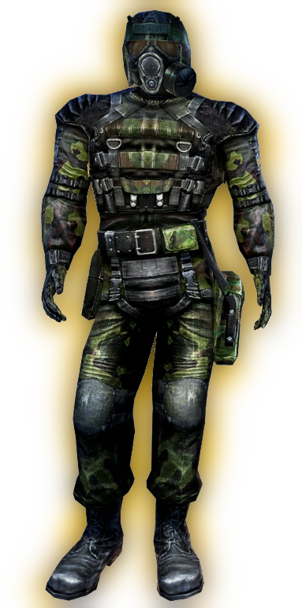

Костюмы
Кожаная куртка
Кожаная куртка — кожанка тёмно-бежевого оттенка. Популярна среди многих новичков-одиночек и чистонебовцев. Одежда широко распространена на окраинах Зоны, обладает низкой стоимостью и характеристиками защиты.
Бандитская куртка
Бандитская куртка — обычная непримечательная куртка из кожи. Носится бандитами-новичками и ренегатами. По сути, почти никакой защиты не представляет в таком опасном месте, как Зона. Но очень часто в неё вшивают броневые пластины, что повышает шанс спастись от пуль. Также встречается в ЗП как одежда NPC (надеть или найти в ЗП невозможно, так же как и кожаную куртку).
Комбинезон наёмника
Представляет собой костюм из специальной ткани с усилениями в некоторых местах, разгрузочный жилет со множеством карманов и армейские берцы. Имеется сумка для противогаза и кобура для пистолета. Голова защищена лишь капюшоном, либо балаклавой (нередко совмещенной с американским экспериментальным противогазом XM40). На плече нашита эмблема наёмников в виде синего орла.
Комбинезон «Заря»
Производимый «народными умельцами» комбинезон сталкера представляет собой эффективное сочетание лёгкого армейского бронежилета и комбинезона из прорезиненной ткани. Усилен за счёт встроенных кевларовых пластин. Неплохо защищает от слабого стрелкового оружия. В целом крайне недостаточен для глубоких рейдов и серьёзных операций в узлах Зоны.
ПСЗ-9д «Броня Долга»
Ранняя модель комбинезона «Долга» — бронежилет спецназа серии ПС3-9, приспособленный для использования в условиях Зоны. Способен защитить от автоматной пули, но очень громоздок и почти не обеспечивает защиту от аномальных воздействий. Установка контейнеров для артефактов не предусмотрена, зато возможно оснащение различными вспомогательными системами.
Комбинезон «Ветер свободы»
Облегчённый комбинезон сталкера, производимый ремесленниками группировки «Свобода». Ткань обработана специальным составом, повышающим сопротивление аномальной активности. Содержит встроенный контейнер для артефактов.
Комбинезон «Страж свободы»
Усиленный комбинезон сталкера, производимый ремесленниками группировки «Свобода». Встроенный бронежилет способен остановить пистолетную пулю. Внешняя оболочка состоит из двух слоёв: обработанной особым образом кожи и асбестовой ткани. Способен защитить своего носителя от некоторых аномальных воздействий и радиации. Содержит контейнер для артефактов.
Комбинезон «Монолита»
Комбинезон сталкера группировки «Монолит», производитель неизвестен. По защитным характеристикам немного уступает армейскому бронежилету серии ПСЗ-9а. По структуре напоминает широко распространённые среди нейтральных сталкеров комбинезоны, в которых бронежилет соединяется с костюмом противорадиационной защиты. Неплохо защищает от слабого стрелкового оружия. Уровень защиты от аномальной активности оставляет желать лучшего из-за отсутствия системы фильтрации воздуха.
ССП-99 «Эколог»
Созданный для работы в условиях Зоны костюм химической защиты ССП-99. Используется экспедициями учёных и сотрудничающих с ними сталкеров-экологов. Встроенная система фильтрации воздуха и кондиционирования. Не рассчитан на ведение боевых действий.
Комбинезон ССП-99М
Высококачественный модифицированный комбинезон ССП-99. Добавлена защита торса от пулевого и осколочного повреждения. Предназначен для экипировки охраны научных экспедиций. Эффективная защита от радиации и биологических аномалий. Стоек к химически-агрессивным средам и другим вредным для организма воздействиям.
ПСЗ-9Мд «Универсальная защита»
Отличный защитный костюм для Зоны. Сталкеры ценят его за сочетание отличных противоаномальных качеств и противопулевой защиты. В составе: комбинезон ПСЗ-9д, система дыхания с замкнутым циклом, встроенная система подавления действия аномальных полей. Предоставляет качественную защиту от пулевого и осколочного попадания.
Комбинезон «СЕВА»
Производимый одним из оборонных киевских НИИ данный комбинезон предоставляет отличную альтернативу другим сталкеровским комбинезонам, изготовленным в кустарных условиях. Представляет систему дыхания с замкнутым циклом, а также встроенной системы подавления действия аномальных полей. За счёт удачного подбора материалов является хорошим выбором. Единственный недостаток — его цена.
Бронекостюм «Берилл-5М»
Модифицированная для работы в условиях Зоны, экипировка армейского спецназа - Берилл-5М. В составе: армейский бронежилет серии ПСЗ-9а с бериллиевым напылением, шлем Сфера-08. Предназначен для штурмовых операций в областях с повышенным радиационным фоном. Слабоэффективен в условиях высокой аномальной активности.
Бронекостюм «Булат»
Современный армейский бронекостюм для проведения штурмовых операций в зонах аномальной активности. Компоненты: тяжёлый бронежилет серии ПСЗ-12п, комбинезон аномальной защиты и компенсационный костюм. Предоставляет великолепную защиту от пуль и осколков, и при этом удобен, почти не ограничивает подвижность носителя. Не оснащается контейнерами для артефактов.
Экзоскелет
Экспериментальный образец военного экзоскелета. В серийное производство не пошёл ввиду чрезвычайно высокой себестоимости и некоторых огрехов в проектировании. Несмотря на это, из-за возможности значительно увеличивать мобильность носителя пользуется спросом и потому негласно выпускается малыми партиями за пределами Украины. Оснащён встроенным контейнером для артефактов.